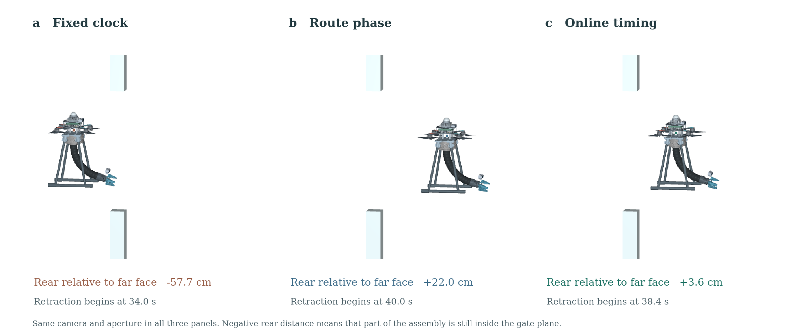
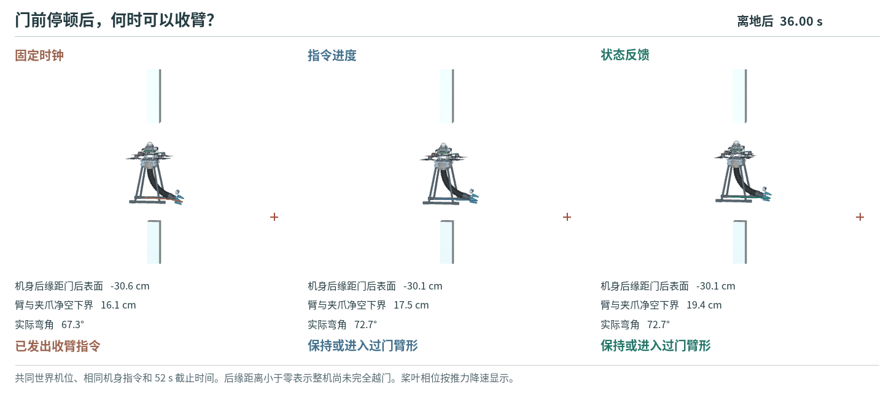
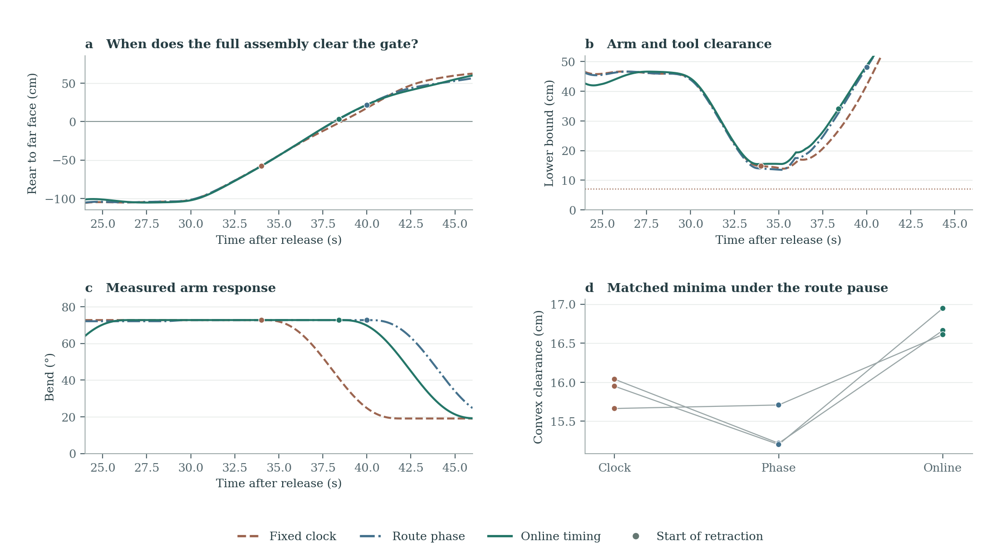

G1 · 单门在线调时 / 2026-11-19 15:56（北京时间）
机身在门前停顿，柔性臂何时收回？
21 趟单门飞行均在 52 秒内到位。停顿时按时钟收臂的机体后缘尚距出口 58.2 cm，状态触发时已越过 3.3 cm。
大附件单独提供：21 趟 50 Hz 状态与净空曲线、241118 · 连续 · 固定时钟、241118 · 停顿 · 固定时钟、241118 · 连续 · 状态触发、241118 · 停顿 · 状态触发、241118 · 在线弯／进度收、241118 · 停顿 · 指令进度、241118 · 进度弯／在线收、241119 · 连续 · 固定时钟、241119 · 停顿 · 固定时钟、241119 · 连续 · 状态触发、241119 · 停顿 · 状态触发、241119 · 在线弯／进度收、241119 · 停顿 · 指令进度、241119 · 进度弯／在线收、241120 · 连续 · 固定时钟、241120 · 停顿 · 固定时钟、241120 · 连续 · 状态触发、241120 · 停顿 · 状态触发、241120 · 在线弯／进度收、241120 · 停顿 · 指令进度、241120 · 进度弯／在线收。
模型与场景

01三种方法分别在什么位置收臂
种子 241119。门槛和门楣给出同一中央截面，正值表示机体最后方部件已经越过出口面。


02同一飞行时刻的三个机体与夹爪
固定世界相机、同一门框。对照三种方法的车辆位置和夹爪轨迹。

曲线与机制图

01整机后缘、实际弯角与臂爪净空
前三幅为种子 241119。末幅连接三组噪声种子在不同方法下的最小凸体净空。

视频回放
01门前停顿与恢复前进的同步录像
三个独立 PX4 运行在相同仿真时钟回放。窗口覆盖飞行第 19 到 50 秒，按实际速度播放。
论文与报告
第一页比较收臂位置、净空与到位时间。第二页用交叉对照定位最近点发生的阶段。
数据及运行记录
每行一趟，含保守与凸体净空、最大弯角、收臂位置、到位时间和计算耗时。
每个种子四个组合。两组复用主试验，另两组独立补飞。
检查最近点和收臂的先后顺序、前缀指令逐拍一致性以及过期状态或门框封堵时的行为。
核对原生 ULog、物理状态和控制输入，重放在线决策并核对同路线的机身指令。
全部 21 个压缩包按文件名给出原始字节数与指纹。
运行前冻结的 15 趟顺序、两种机身进度与 5 Hz 状态触发规则。
主试验之后登记的 6 趟，沿用同一门框和截止时间。
说明配对、判据、证据范围和在新目录复现的方式。
按种子和方法分数组，保留统一列名和原有单位。
原生飞行日志、机身和机械臂状态、时序决策与执行输入。
原生飞行日志、机身和机械臂状态、时序决策与执行输入。
原生飞行日志、机身和机械臂状态、时序决策与执行输入。
原生飞行日志、机身和机械臂状态、时序决策与执行输入。
原生飞行日志、机身和机械臂状态、时序决策与执行输入。
原生飞行日志、机身和机械臂状态、时序决策与执行输入。
原生飞行日志、机身和机械臂状态、时序决策与执行输入。
原生飞行日志、机身和机械臂状态、时序决策与执行输入。
原生飞行日志、机身和机械臂状态、时序决策与执行输入。
原生飞行日志、机身和机械臂状态、时序决策与执行输入。
原生飞行日志、机身和机械臂状态、时序决策与执行输入。
原生飞行日志、机身和机械臂状态、时序决策与执行输入。
原生飞行日志、机身和机械臂状态、时序决策与执行输入。
原生飞行日志、机身和机械臂状态、时序决策与执行输入。
原生飞行日志、机身和机械臂状态、时序决策与执行输入。
原生飞行日志、机身和机械臂状态、时序决策与执行输入。
原生飞行日志、机身和机械臂状态、时序决策与执行输入。
原生飞行日志、机身和机械臂状态、时序决策与执行输入。
原生飞行日志、机身和机械臂状态、时序决策与执行输入。
原生飞行日志、机身和机械臂状态、时序决策与执行输入。
原生飞行日志、机身和机械臂状态、时序决策与执行输入。